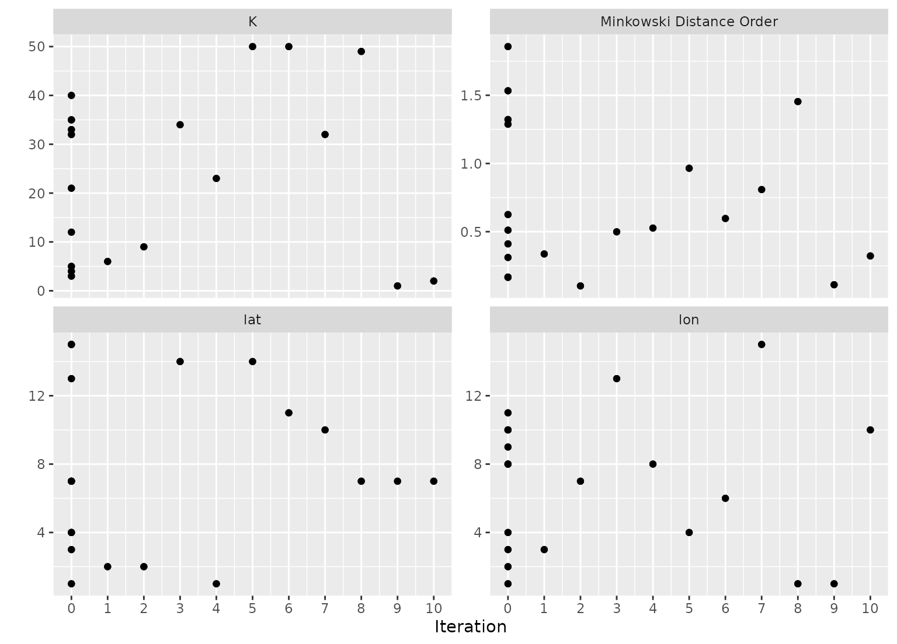
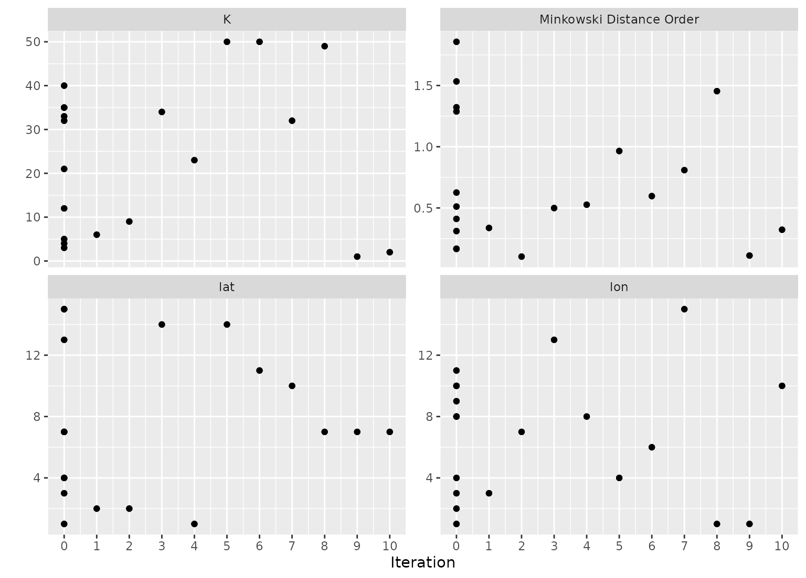

Plot tuning search results
Usage
# S3 method for tune_results
autoplot(
object,
type = c("marginals", "parameters", "performance"),
metric = NULL,
eval_time = NULL,
width = NULL,
call = rlang::current_env(),
...
)Arguments
- object
A tibble of results from
tune_grid()ortune_bayes().- type
A single character value. Choices are
"marginals"(for a plot of each predictor versus performance; see Details below),"parameters"(each parameter versus search iteration), or"performance"(performance versus iteration). The latter two choices are only used fortune_bayes().- metric
A character vector or
NULLfor which metric to plot. By default, all metrics will be shown via facets. Possible options are the entries in.metriccolumn ofcollect_metrics(object).- eval_time
A numeric vector of time points where dynamic event time metrics should be chosen (e.g. the time-dependent ROC curve, etc). The values should be consistent with the values used to create
object.- width
A number for the width of the confidence interval bars when
type = "performance". A value of zero prevents them from being shown.- call
The call to be displayed in warnings or errors.
- ...
For plots with a regular grid, this is passed to
format()and is applied to a parameter used to color points. Otherwise, it is not used.
Details
When the results of tune_grid() are used with autoplot(), it tries to
determine whether a regular grid was used.
Regular grids
For regular grids with one or more numeric tuning parameters, the parameter with the most unique values is used on the x-axis. If there are categorical parameters, the first is used to color the geometries. All other parameters are used in column faceting.
The plot has the performance metric(s) on the y-axis. If there are multiple metrics, these are row-faceted.
If there are more than five tuning parameters, the "marginal effects" plots are used instead.
Irregular grids
For space-filling or random grids, a marginal effect plot is created. A panel is made for each numeric parameter so that each parameter is on the x-axis and performance is on the y-xis. If there are multiple metrics, these are row-faceted.
A single categorical parameter is shown as colors. If there are two or more
non-numeric parameters, an error is given. A similar result occurs is only
non-numeric parameters are in the grid. In these cases, we suggest using
collect_metrics() and ggplot() to create a plot that is appropriate for
the data.
If a parameter has an associated transformation associated with it (as determined by the parameter object used to create it), the plot shows the values in the transformed units (and is labeled with the transformation type).
Parameters are labeled using the labels found in the parameter object
except when an identifier was used (e.g. neighbors = tune("K")).
Examples
# For grid search:
data("example_ames_knn")
# Plot the tuning parameter values versus performance
autoplot(ames_grid_search, metric = "rmse")
 # For iterative search:
# Plot the tuning parameter values versus performance
autoplot(ames_iter_search, metric = "rmse", type = "marginals")
# For iterative search:
# Plot the tuning parameter values versus performance
autoplot(ames_iter_search, metric = "rmse", type = "marginals")
 # Plot tuning parameters versus iterations
autoplot(ames_iter_search, metric = "rmse", type = "parameters")

# Plot performance over iterations
autoplot(ames_iter_search, metric = "rmse", type = "performance")
# Plot tuning parameters versus iterations
autoplot(ames_iter_search, metric = "rmse", type = "parameters")

# Plot performance over iterations
autoplot(ames_iter_search, metric = "rmse", type = "performance")